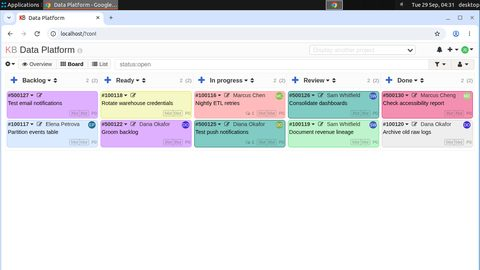
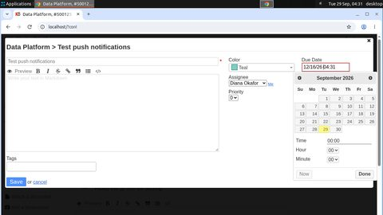
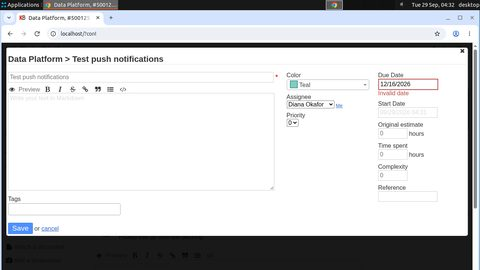
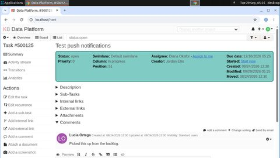
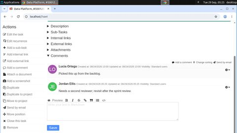

Forkloop evidence bundle
Kanboard: a second world through the public interface
One failure, repaired
due_and_comment-train-000006
Task. In the Kanboard project "Data Platform", set the due date of the task "Test push notifications" to 2026-12-16 and add the comment "Needs a second reviewer; revisit after the sprint review." to it.
The agent under repair (student) took 40 steps and ended failed with NOT_DONE. What the verifier read from the databases:
due_changed: database has0, task needs0due_date: database hasnone, task needs2026-12-16one_comment: database has0, task needs1comment_text: database has no matching row, task needsNeeds a second reviewer; revisit after the sprint review.

click(628, 356)
click(1084, 222)
type("12/16/2026 04:31")click(1086, 224)key("ctrl+a")Checkpoints and the chosen restart point
● replay/reset checkpoint ■ provider VM snapshot green = clean, red = damaged (a safety violation or a new wrong record already persisted), amber = unknown.
- step 36 — latest: {"end_step": 40, "verdict": "NOT_DONE"}
- step 0 — start: {}
Restart points come from recorded evidence (controller-side; the teacher never sees why the attempt failed). Each branch restores the world and the agent memory independently.
2 branches
failed br-d4246b11e38e
- from
- step 36 (replay)
- restore
- ok in 42.132 s, replayed 36 steps
- fidelity
- tables equal: True; screen distance 0.0
- verdict
NOT_DONEafter 30 steps
verified br-cf27ced680e8
- from
- step 36 (replay)
- restore
- ok in 43.164 s, replayed 36 steps
- fidelity
- tables equal: True; screen distance 0.0
- verdict
OKafter 9 steps
click(1085, 224)
click(982, 594)
done()What the dataset received
9 action-demonstration records from the verified branch (steps 36–44); each carries the exact input the teacher saw on that path. The first one:
INPUT memory: [] INPUT last actions: ["type(\"2026-12-16\")", "click(1086, 224)", "click(1086, 224)", "type(\"16/12/2026\")"] TARGET (screen pixels): The due-date field contains concatenated invalid text; replace it with the required date. click(1085, 224)
record 3d14ba22d0b248c4 · source branch br-cf27ced680e8 · memory provenance ok
Datasets and lineage
| dataset | records | preference pairs | origins | records.jsonl sha256 | audit |
|---|---|---|---|---|---|
ds-a504e6fca3fbkanboard-corrections-20260929 | 136 | 10 | {"correction_suffix": 42, "restart_demo": 94} | a504e6fca3fb74a1… | {"hidden_in_text_input": 0, "memory_provenance_bad": 0, "memory_provenance_ok": 136, "type_target_from_memory": 0, "type_target_needs_screen": 0} |